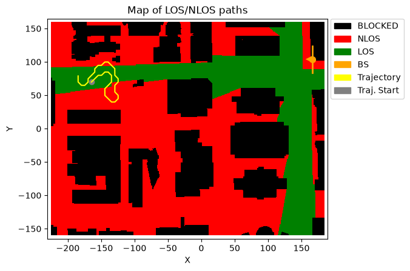

Applying a Trajectory-Based Channel in the Frequency and Time Domains
This notebook demonstrates how to apply a NeoRadium trajectory-based channel in both the frequency domain and the time domain. It first opens a DeepMIMO scenario, creates a random UE trajectory, and then creates a TrjChannel object from that trajectory.
The notebook then creates a random transmit resource grid and applies the same channel in two different ways:
Frequency-domain channel application: the channel matrix is obtained from the TrjChannel object and applied directly to the transmit resource grid.
Time-domain channel application: the transmit resource grid is first converted to a waveform using OFDM modulation, the trajectory-based channel is applied to the waveform, and the received waveform is synchronized and demodulated back to a resource grid.
Finally, the notebook compares the received resource grids from the two methods using the normalized mean squared error (NMSE).
Notes
This simple example applies the channel only at the first point of the trajectory. It does not advance the UE along the trajectory and does not loop over trajectory points.
No noise is added in this example. The goal is to compare the channel application methods, not to evaluate link performance.
The NMSE between the frequency-domain and time-domain received grids is expected to be small, but not necessarily exactly zero. The time-domain path includes OFDM modulation, channel filtering, timing synchronization, and OFDM demodulation, which can introduce small numerical differences.
The trajectory is generated from points on the DeepMIMO grid. The
trajLenparameter refers to the number of DeepMIMO grid points used for the trajectory, not the final number of interpolated trajectory points.The user may need to update the
dataFoldervariable based on the location of the DeepMIMO scenario files on their system.
[1]:
import numpy as np
import time
from neoradium import DeepMimoData, TrjChannel, BandwidthPart, AntennaPanel, Modem, random
from neoradium.utils import getNmse
[2]:
# Replace this with the folder on your system where the DeepMIMO scenarios are stored
dataFolder = "/data/RayTracing/DeepMIMO/Scenarios/V4/"
DeepMimoData.setScenariosPath(dataFolder)
# Create a DeepMimoData object
deepMimoData = DeepMimoData("asu_campus_3p5")
deepMimoData.print()
DeepMimoData Properties:
Scenario: asu_campus_3p5
Version: 4.0.0a3
UE Grid: rx_grid
Grid Size: 411 x 321
Base Station: BS (at [166. 104. 22.])
Total Grid Points: 131,931
UE Spacing: [1. 1.]
UE bounds (xyMin, xyMax) [-225.55 -160.17], [184.45 159.83]
UE Height: 1.50
Carrier Frequency: 3.5 GHz
Num. paths (Min, Avg, Max): 0, 6.21, 10
Num. total blockage: 46,774
LOS percentage: 19.71%
[3]:
random.setSeed(123) # Make results reproducible
bwp = BandwidthPart(numRbs=24, spacing=15) # Create a BandwidthPart object
# Create a random trajectory
trajectory = deepMimoData.getRandomTrajectory(xyBounds=np.array([[-210, 40], [-120, 100]]), # Trajectory bounds
segLen=5, # Number of DeepMIMO grid points on the shortest segment
bwp=bwp, # The bandwidth part
trajLen=200, # Number of DeepMIMO grid points on the trajectory
speedMps=30) # Speed in m/s
trajectory.print() # Print the trajectory information
ax = deepMimoData.drawMap("LOS-NLOS", trajectory) # Draw the map with the trajectory
deepMimoData.drawBsPanel(ax, 180) # TX antenna at a 180-degree bearing angle
Trajectory Properties:
start (x,y,z): (-164.55, 69.83, 1.50)
No. of points: 7,968
curIdx: 0 (0.00%)
curSpeed: [21.28 21.28 0. ]
Total distance: 240.42 meters
Total time: 7.967 seconds
Average Speed: 30.177 m/s
Carrier Frequency: 3.5 GHz
Paths (Min, Avg, Max): 5, 8.79, 10
Totally blocked: 0
LOS percentage: 59.43%

[4]:
# Print the properties of the first trajectory point
trajectory[0].print()
TrjPoint Properties:
location: -164.55 69.83 1.50 m
Distance to BS: 332.94 m
LOS/NLOS: Has LOS path
numPaths: 8
sampleNo: 0
time: 0.000000 sec
speed vector: (21.277,21.277,0.000) m/s.
Line-Of-Sight Path:
Path ID: 1
Delay (ns): 1110.94006
Power (dB): -93.78190
Phases (Deg): -106
AOA (Deg): 5
ZOA (Deg): 86
AOD (Deg): -174
ZOD (Deg): 93
Non-Line-Of-Sight Paths (7):
Path IDs: 2 3 4 5 6 7 8
Delays (ns): 1111. 1111. 1112. 1113. 1113. 1255. 1256.
Powers (dB): -97.1 -113. -114. -115. -112. -98.9 -101.
Phases (Deg): -39 102 115 -58 162 36 -161
AOAs (Deg): 6 3 2 9 -2 -27 -27
ZOAs (Deg): 94 94 86 86 85 87 94
AODs (Deg): -174 -173 -172 -178 -172 -151 -151
ZODs (Deg): 94 94 94 94 93 93 94
Bounces: 1 21 2 2 21 1 11
1: Reflection, 2: Diffraction, 3: Scattering, 4: Transmission
[5]:
# Create a random resource grid
txGrid = bwp.createGrid(numPorts=16) # Create an empty resource grid
stats = txGrid.getStats() # Get statistics about the grid
modem = Modem("16QAM") # Use 16QAM modulation
numRandomBits = stats['UNASSIGNED']*modem.qm # Total number of bits available in the resource grid
bits = random.bits(numRandomBits) # Create random bits
symbols = modem.modulate(bits) # Modulate the bits to get symbols
indices = txGrid.getReIndexes("UNASSIGNED") # Indices of the "UNASSIGNED" resources
txGrid[indices] = symbols # Put symbols in the resource grid
txWaveform = txGrid.ofdmModulate() # OFDM-modulate the resource grid to get a waveform
print("Resource grid shape:", txGrid.shape)
print("Waveform shape: ", txWaveform.shape)
Resource grid shape: (16, 14, 288)
Waveform shape: (16, 30720)
[6]:
# Create a trajectory-based MIMO channel model
channel = TrjChannel(bwp, trajectory,
txAntenna = AntennaPanel([2,4], polarization="x"), # 16 TX antennas
txOrientation = [180,0,0], # BS antenna facing the left side of the map
rxAntenna = AntennaPanel([1,2], polarization="x"), # 4 RX antennas
seed=123)
print(channel)
TrjChannel Properties:
carrierFreq: 3.5 GHz
normalizeGains: True
normalizeOutput: True
normalizeDelays: True
xPolPower: 10.00 (dB)
filterLen: 16 samples
delayQuantSize: 64
stopBandAtten: 80 dB
dopplerShift: 353.8 Hz
coherenceTime: 1.196 milliseconds
TX Antenna:
Total Elements: 16
spacing: 0.5𝜆, 0.5𝜆
shape: 2 rows x 4 columns
polarization: x
Orientation (𝛼,𝛃,𝛄): 180° 0° 0°
RX Antenna:
Total Elements: 4
spacing: 0.5𝜆, 0.5𝜆
shape: 1 rows x 2 columns
polarization: x
Trajectory:
start (x,y,z): (-164.55, 69.83, 1.50)
No. of points: 7,968
curIdx: 0 (0.00%)
curSpeed: [21.28 21.28 0. ]
Total distance: 240.42 meters
Total time: 7.967 seconds
Average Speed: 30.177 m/s
Carrier Frequency: 3.5 GHz
Paths (Min, Avg, Max): 5, 8.79, 10
Totally blocked: 0
LOS percentage: 59.43%
[7]:
# Apply the channel in the frequency domain
t0 = time.monotonic()
channelMatrix = channel.getChannelMatrix()
rxGridF = txGrid.applyChannel(channelMatrix)
t1 = time.monotonic()
print(f"Time to apply the channel in the frequency domain (s): {t1-t0:.04f}")
Time to apply the channel in the frequency domain (s): 0.0118
[8]:
# Apply the channel in the time domain and demodulate the received waveform to get a resource grid
t0 = time.monotonic()
maxDelay = channel.getMaxDelay() # Calculate the maximum channel delay
paddedTxWaveform = txWaveform.pad(maxDelay) # Pad the waveform with zeros
rxWaveform = channel.applyToSignal(paddedTxWaveform) # Apply the channel to the waveform
offset = channel.getTimingOffset() # Get the timing offset for synchronization
syncedWaveform = rxWaveform.sync(offset) # Synchronize the received waveform
rxGridT = syncedWaveform.ofdmDemodulate(bwp) # OFDM-demodulate the synchronized waveform
t1 = time.monotonic()
print(f"Time to apply the channel in the time domain (s): {t1-t0:.04f}")
print(f"NMSE between the rxGrid in time and frequency domains: {getNmse(rxGridT.grid,rxGridF.grid):.04g}")
Time to apply the channel in the time domain (s): 0.1837
NMSE between the rxGrid in time and frequency domains: 9.404e-18
[ ]: